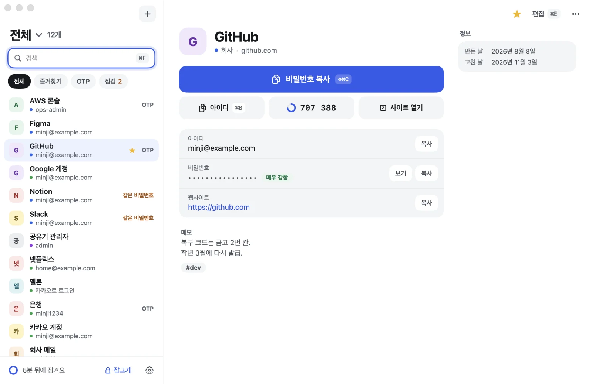
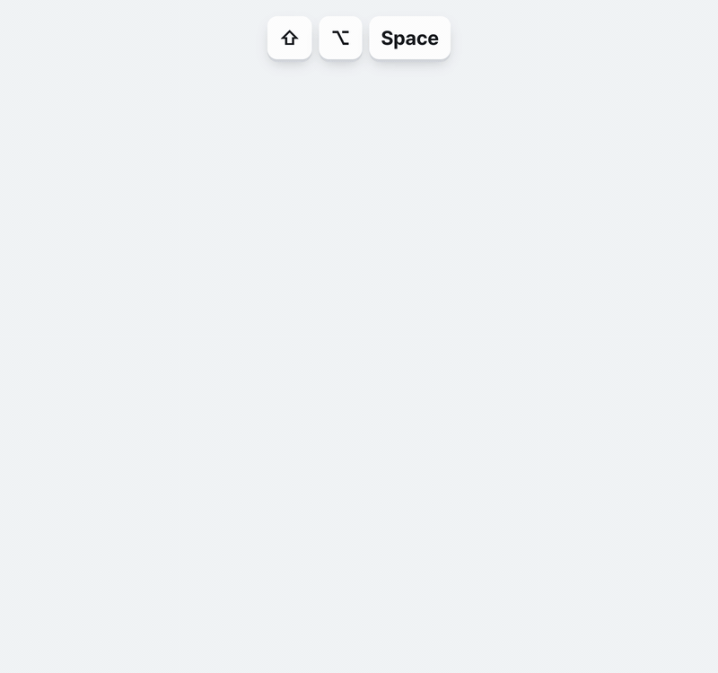
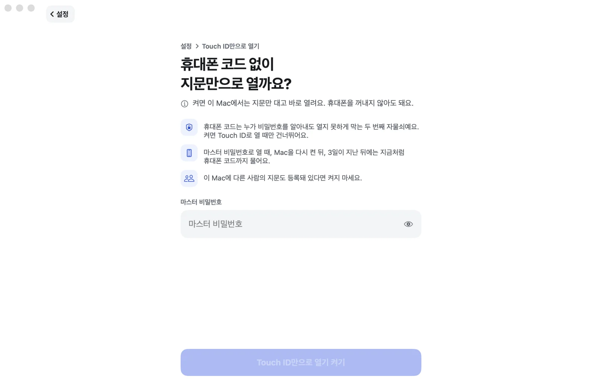
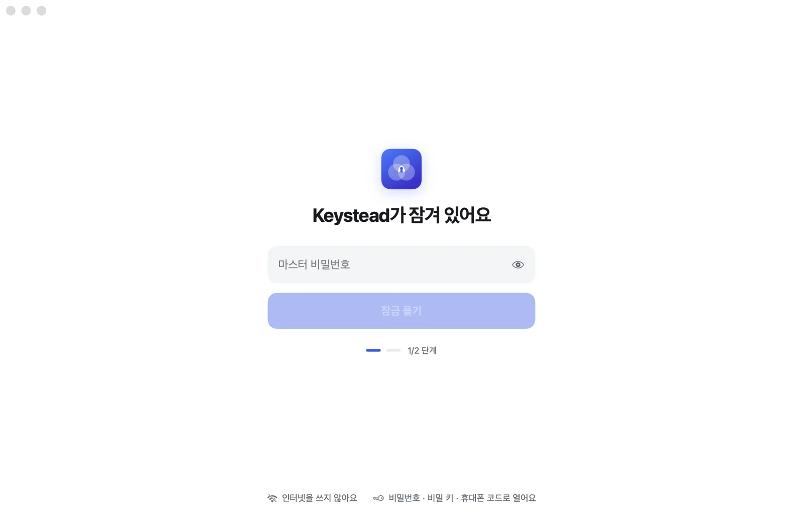
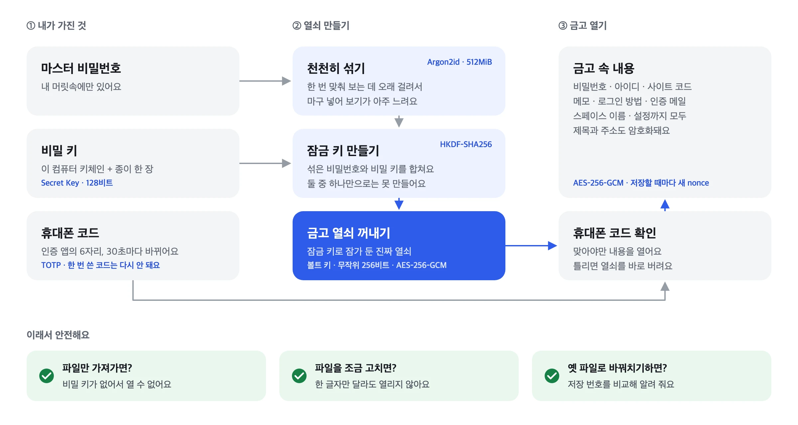
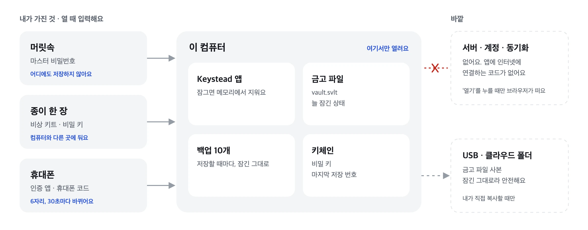
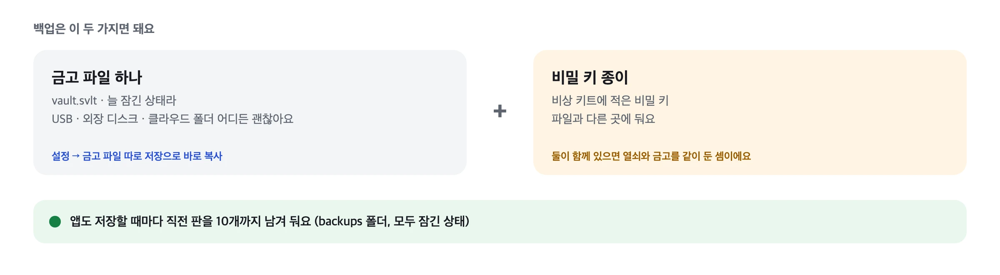
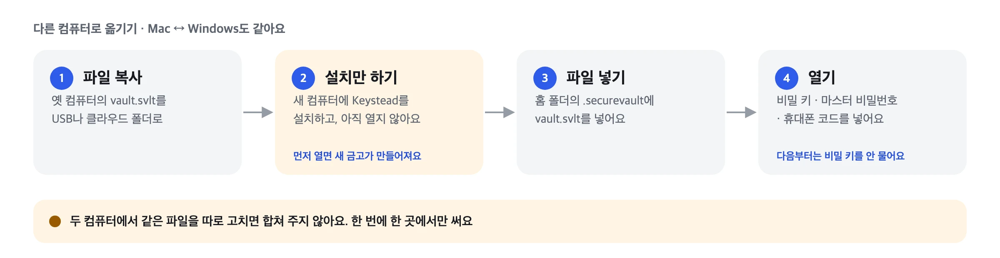
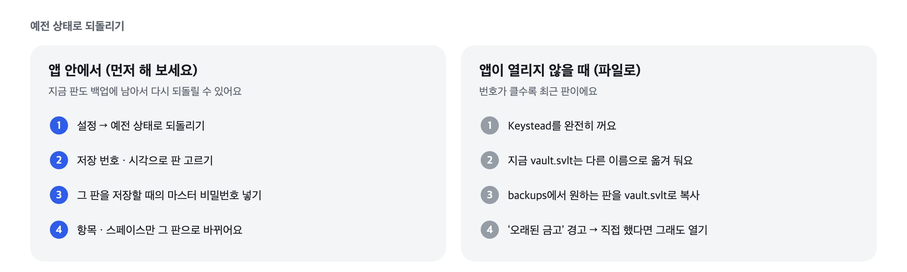
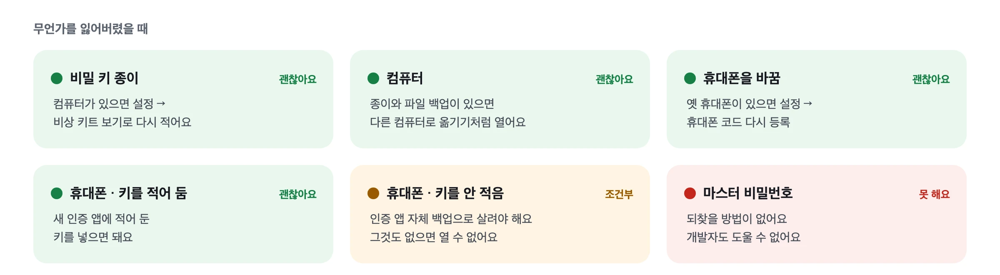

01 · 금고
가장 큰 버튼이 비밀번호 복사예요
창을 열면 검색칸에 커서가 있어요. 두세 글자 치고 ↵를 누르면 비밀번호가 복사돼요.
항목 맨 위에는 파란 비밀번호 복사 버튼이 있고, 그 아래로 아이디 · 지금 일회용 코드 · 사이트 열기가 이어져요.

서버도 계정도 없어요. 금고는 내 컴퓨터에 있는 암호화된 파일 하나이고, Mac과 Windows에서 같은 파일을 열어요.
macOS 14 이상 · Windows 10/11 · Apache License 2.0
둘러보기
모두 Mac 앱의 실제 창을 예시 데이터로 찍었어요.
시작하기
열쇠 세 개를 머릿속 · 종이 · 휴대폰에 나눠 두는 과정이에요. 다음부터는 마스터 비밀번호와 휴대폰 코드만 있으면 열려요.
두 번 입력해요. 외울 수 있는 긴 문장이 좋아요. 이 비밀번호는 어디에도 저장하지 않아요.
화면에 나온 비밀 키(Secret Key)를 종이에 적고 마지막 4글자로 확인해요. 이 컴퓨터의 키체인에도 들어가요.
인증 앱으로 QR을 찍고 6자리 코드를 넣어요. Google · Microsoft Authenticator 같은 앱이면 돼요.
비밀 키 종이와 OTP 키는 컴퓨터와 다른 곳에 두세요. 컴퓨터를 바꾸거나 휴대폰을 잃었을 때 되찾는 유일한 방법이에요. QR 옆 4글자 묶음 키를 같은 종이에 적어 두면, 휴대폰을 잃어도 다른 인증 앱에 다시 넣을 수 있어요.
기능
창을 닫아도 Keystead는 켜져 있어요. Mac은 Dock에, Windows는 작업 표시줄 오른쪽 알림 영역에 남아요. 끄려면 Mac은 ⌘Q, Windows는 알림 영역 아이콘에서 끝내기를 눌러요.


설정에서 켜면 비밀번호 대신 지문으로 열어요. Windows Hello는 지문 · 얼굴 · PIN을 써요. 3일이 지나거나 컴퓨터를 다시 켜면 비밀번호를 물어요. ‘Touch ID만으로 열기’를 켜면 휴대폰 코드도 건너뛰어요. 기본은 꺼져 있어요.

잠자기 · 화면 잠금 · 사용자 전환 때 바로 잠가요. 정해 둔 시간(1 · 5 · 15 · 30 · 60분) 동안 안 써도 잠그고, 연 지 12시간이 지나면 무조건 잠가요. 바로 잠그려면 ⌘L.
회사 · 개인 · 기타처럼 금고를 나누고 ⌘1~⌘9로 오가요. 이름과 색은 직접 정해요.
계정 · 서버 · 사용 통계 · 오류 보고 · 업데이트 확인 · 광고가 없어요. 두 앱 모두 인터넷에 연결하는 코드가 없어요. 항목의 열기를 누를 때만 기본 브라우저가 그 주소를 열어요.
| 하는 일 | macOS | Windows |
|---|---|---|
| 빠른 검색(다른 앱에서도) | ⇧⌥Space | Alt+Shift+Space |
| 검색칸으로 | ⌘F | Ctrl+F |
| 전체 / 스페이스 1~9 | ⌘0 / ⌘1~⌘9 | Ctrl+0 / Ctrl+1~Ctrl+9 |
| 비밀번호 복사 | ⇧⌘C 또는 ↵ | Ctrl+Shift+C 또는 Enter |
| 아이디 복사 | ⌘B | Ctrl+B |
| 새 항목 · 편집 | ⌘N · ⌘E | Ctrl+N · Ctrl+E |
| 편집 창에서 저장 | ⌘↵ | Ctrl+Enter |
| 바로 잠그기 | ⌘L | Ctrl+L |
지키는 방식
마스터 비밀번호와 비밀 키가 함께 있어야 열쇠가 나와요. 앱은 휴대폰 코드까지 맞아야 내용을 보여 줘요.

| 비밀번호 대입 | Argon2id로 한 번 시도에 메모리 512MiB와 0.6초 남짓이 들어요. Apple M 시리즈 기준이에요. |
| 파일 유출 | 128비트 비밀 키가 비밀번호와 함께 열쇠를 만들어요. 비밀번호가 약해도 대입할 수 없어요. |
| 내용 노출 | AES-256-GCM으로 잠가요. 제목 · 주소 · 메모 · 스페이스 이름까지 모두요. |
| 파일 위변조 | 한 글자만 바꿔도 열리지 않아요. |
| 옛 파일로 바꿔치기 | 저장 번호를 키체인에도 적어 두고, 더 오래된 파일이면 경고해요. |
| 비밀번호가 샌 뒤 | 마스터 비밀번호를 바꾸면 금고 열쇠도 새로 만들어요. 예전 비밀번호로 열리는 기록은 지워요. |
| 연속 실패 | 3번째부터 기다리는 시간이 2배씩 늘어요(최대 15분). |
| 클립보드 | 정해 둔 시간 뒤에 지우고, 클립보드 기록에 남지 않게 표시해요. |
저장된 파일에 평문이 남지 않는지도 검사해요. Mac · Windows · Python이 만든 금고 모두 통과해요.
백업 · 옮기기 · 되돌리기
그래서 백업도, 옮기기도, 되돌리기도 그 파일을 다루는 일이에요.

열쇠는 머릿속 · 종이 · 휴대폰에 나눠 두고, 금고 파일은 이 컴퓨터에만 있어요. USB나 클라우드 폴더에는 내가 직접 복사할 때만 잠긴 사본이 가요.

금고 파일과 비밀 키 종이, 두 가지면 돼요. 파일은 늘 잠긴 상태라 USB · 외장 디스크 · 클라우드 폴더 어디에 둬도 괜찮아요. 설정의 금고 파일 따로 저장으로 원하는 곳에 바로 복사할 수 있어요.
파일은 Mac ~/.securevault/vault.svlt, Windows %USERPROFILE%\.securevault\vault.svlt에 있어요.

새 컴퓨터에는 설치만 하고 아직 열지 마세요. 먼저 열면 새 금고가 만들어져요. 홈 폴더의 .securevault에 파일을 넣고 열면 돼요. Mac과 Windows 사이도 똑같아요.

설정의 예전 상태로 되돌리기에서 저장 번호와 시각으로 판을 골라요. 항목과 스페이스만 그 판으로 바뀌고, 바꾸기 전 판도 백업에 남아요.
되돌린 적이 없는데 오래된 금고라는 경고가 뜨면 누군가 파일을 바꿔치기했을 수 있어요. 열지 않기를 누르고 파일을 확인해 보세요.

마스터 비밀번호는 되찾을 방법이 없어요. 비밀번호와 키를 어디에도 맡기지 않는 대신, 잃어버리면 개발자도 도와줄 수 없어요.
그림을 옆으로 밀어 보세요
질문
두 앱이 같은 금고 파일을 열어요. 다만 동기화는 없어서 파일을 직접 옮겨야 해요. 두 컴퓨터에서 같은 파일을 따로 고치면 합쳐 주지 않아요.
아직 Apple 공증과 Windows 코드 서명이 없어서 처음 한 번은 OS가 막아요. 대신 릴리스마다 파일 해시에 서명해 두었어요. 아래 내려받기에서 받은 파일이 진짜인지 직접 확인할 수 있어요.
Windows 서버에서 빌드와 파일 호환까지 확인했지만, 실제 Windows PC에서는 아직 돌려 보지 않았어요. 0.8.0의 빠른 검색 창과 Windows Hello도 마찬가지예요. 써 보다가 이상한 점이 보이면 이슈로 알려 주세요.
앱이 스스로 업데이트를 확인하지 않아요. 새 판은 GitHub 릴리스에 올라오고, 무엇이 바뀌었는지는 릴리스 노트에 적어요. 0.8.0도 금고 파일 형식은 그대로예요.
한국어예요. 이 페이지와 README는 영어로도 볼 수 있어요.
앱을 지우고, 홈 폴더의 .securevault 폴더와 키체인(Windows는 자격 증명 관리자)에서 securevault로 시작하는 항목을 지워요. 비상 키트 종이까지 없애면 그 금고는 다시 열 수 없어요.
공개 이슈 대신 저장소 소유자에게 비공개로 알려 주세요. 고치기 전에 다른 사람이 악용할 수 있어서예요. 7일 안에 답하고, 늦어도 90일 안에 고친 판을 내요. 실제 비밀번호 · 비밀 키 · 금고 파일은 보내지 말아 주세요. 자세한 건 보안 정책에 있어요.
3분이면 시작해요. 코드 서명이 아직 없어서 처음 한 번은 OS가 막아요.
setup.exe를 실행해요.실제 Windows PC에서는 아직 확인하지 못했어요.
Windows용 내려받기누군가 악성코드를 넣은 Keystead를 다른 곳에 올릴 수 있어서, 릴리스마다 파일 해시 목록 SHA256SUMS와 그 서명 SHA256SUMS.sig를 함께 올려요. 받은 파일을 한 폴더에 모으고 저장소의 확인 스크립트를 실행해 보세요.
scripts/verify-release.sh ~/Downloads/keystead-v0.9.0powershell -ExecutionPolicy Bypass -File scripts\verify-release.ps1 -Dir $HOME\Downloads\keystead-v0.9.0모두 확인했습니다가 나오면 진짜예요. 서명된 목록에 적힌 버전이 폴더 이름(keystead-v0.9.0)과 다르면 실패해서, 예전 판을 최신이라고 속일 수 없어요. 공개 키는 .github/release-signing에 있어요.
| 키 | 지문 | 쓰는 판 |
|---|---|---|
| 노트북 보안 칩 키 | SHA256:AQwd7gTjutxsdxShSYdAQoP+qquJb1K7X8AofRSubAU | v0.8.0부터 |
| 이전 노트북 키 | SHA256:U6EENbTlPu90iiZSQjBSImelxY60hD9BujDdZLhk8E8 | v0.5.3 ~ v0.7.0 · 2026-11-06부터 받지 않음 |
| CI 키 | SHA256:haNkzmNl/aFJ/FKWVIBcqGHoHASlxSDlGGcNnhb8HbA | GitHub Actions 빌드용 · 2026-11-09부터 받지 않음 |
| 이전 키 | SHA256:FjJfSvHqxzn5u+Z4cipjFMkOqINdKrHPBrIj8wC6HVY | v0.2.2 ~ v0.5.2 · 2026-11-06부터 받지 않음 |
노트북 보안 칩 키는 Mac 보안 칩 밖으로 나오지 않고, 서명할 때마다 Touch ID를 물어요. 이 저장소가 아닌 메신저나 다른 사이트에서 받은 Keystead는 열지 마세요.